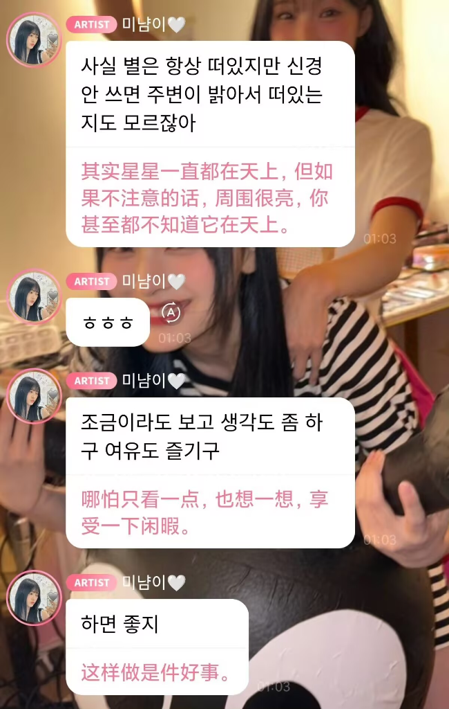
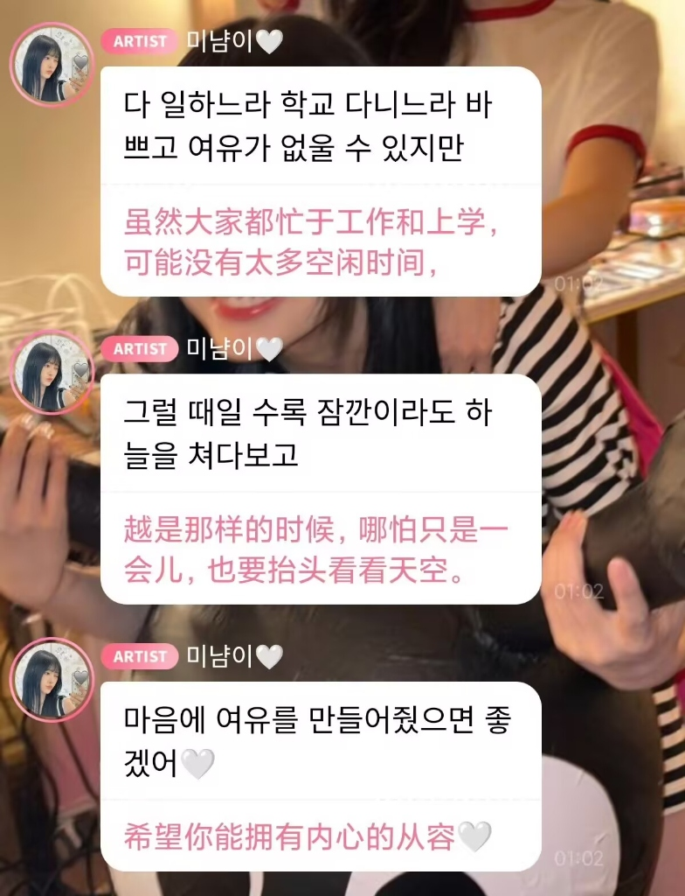
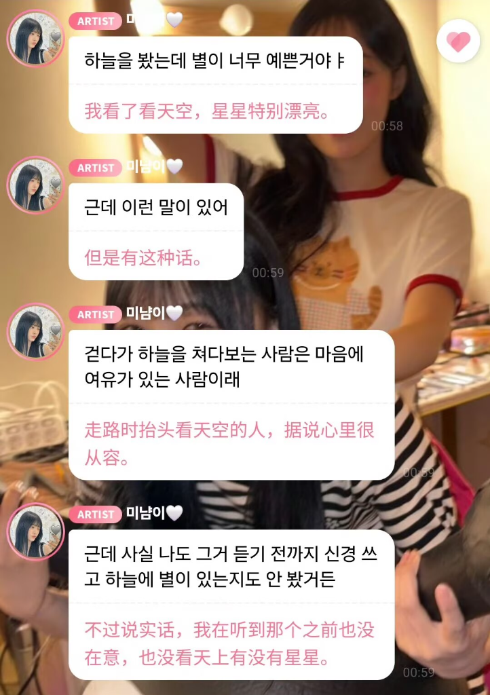

二．我总是抬头看
米兰达你在想什么呢？我今天（2026_5_17）去看穿普拉达的恶魔2，电影很宏伟，夜景更能看出看来大城市的繁华，我本来想能留在杭州就好了，现在也会动摇要不要咬牙去上海，其实在其他地方也咬牙。如果我有选择。我现在就要努力工作。
就算是和别人对接的能力，这就是我喜欢的心情，我也信工作最后只会变成“工作“。因为过过那种生活，我不想做不到。我信，是因为我短时间得到太多，我也更快失去。我明白，但是我没办法不那样做，我就是这样的人，可能之后可以让我更加柔和迂回老狐狸的生活。就说这些吧，幻想里我得到更多。
我喜欢抬头看，我看见树，树的缝隙，看透下来的阳光。旋转我的脑袋，旋转我的眼睛，我高傲的想，蔑视没有抬头的人。但是在景点的屋顶下面，没有人不抬头，我就摸石碑，有时候也摸假的壁画，摸雕像，其实一定都是假的，但我还是有点怕别人在这时间的目光，好像身份对调。
这要是我的房子就好了。
我抬头看我在想什么，我什么都没想，我放空。
我总是抬头看番外
小鬼子有大内涵



评论区